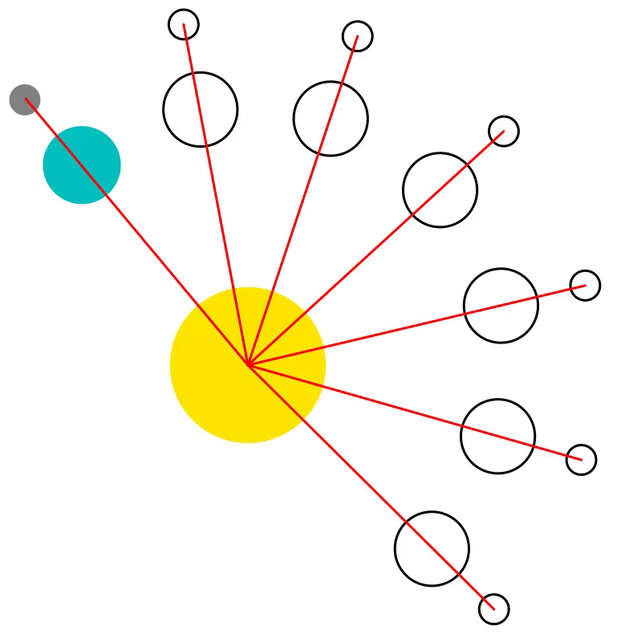
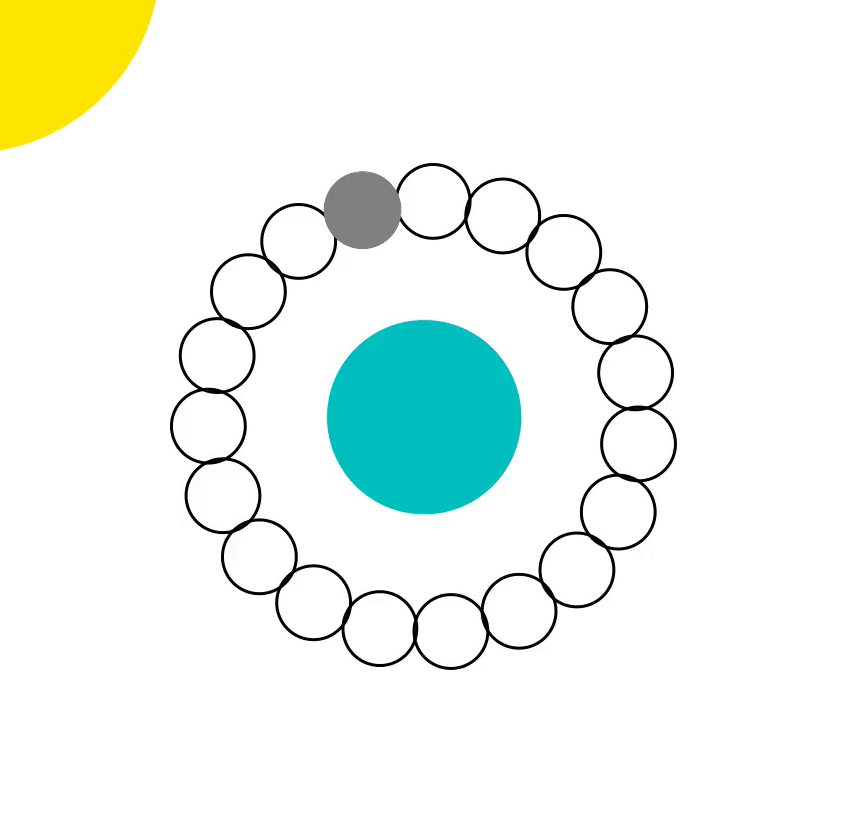

The Easter Algorithm (Computus)
Though the word Computus can technically describe any sort of computation [1] or else a set of medieval tables for calculating various astrological events [2], it is also one of the most common historical names for the calculation of the Christian holiday of Easter every year. Nominally, Easter happens the Sunday after the first full moon after the spring equinox (roughly March 21st). This particular full moon is known by a number of names, such as the Pink (Strawberry) Moon, Hunter's Moon, or the Snow Moon, along with several others. The most common name for it is the paschal full moon, which translates to "Passover" in Greek and signifies an important Jewish festival.
For the first few centuries, the date of Easter each year was dictated by the Pope; however, after the church grew, it was no longer straightforward to communicate this date to all of Christendom. As such, the church did what it could to algorithmically generate tables for clergy to determine the date of Easter each year. To this day, the calculation of Easter still poses a problem, with western and eastern (orthodox) churches celebrating on different dates approximately 50% of the time.
I'll be honest, there is a lot of good, Christian drama surrounding the calculation of this event and it's remarkably interesting to read about [3]. Suffice it to say that the date of Easter bamboozled many historical scholars, with at least one algorithm appearing in the early archives of the now famous scientific journal of Nature [4]. The calculation was so complicated that even Frederick Gauss had to try his hand at it (and failed before being corrected by one of his students).
Essentially, the date of Easter depends on both the lunar and solar cycles The date of the paschal full moon, for example, is static in the lunar calendar, but it is not in the solar calendar. In this way, computus is the act of mapping a lunar cycle onto the Gregorian (solar) calendar everyone knows and loves. Because many different calendar systems have existed throughout history, there was a natural question as to which calendar system would be used to calculate the precise date of Easter. The western churches chose the Gregorian calendar and the eastern churches chosethe Julian one, and this is one reason why western and eastern churches sometimes celebrate on different dates. That said, the Gregorian calendar more accurately represents the true date of the paschal full moon, so the western church's approach ended up being more precise.
Though there are many methods to calculate Easter, for now, we will focus only on Gauss's algorithm; however, we mayl certainly come back (in subsequent years) to incorporate other Easter algorithms if there is demand. These algorithms are some of my favorite gems in the history of algorithm design because of all the drama surrounding the calculation of something that seems trivial! After all, how hard could it be to calculate Easter?
Gauss's Easter algorithm history
Gauss is known for a lot of things: Gaussian elimination, the Cooley-Tukey method before Cooley or Tukey even existed, Gauss's Law for electromagnetism, etc. One thing he is not particularly well known for is an algorithm he devised in 1800, which was later corrected by his student Peter Paul Tittle in 1816. In fact, there were a series of publications from Gauss in this era all relating to the precise date of Easter. The legend goes that Gauss actually did not know his real birthday in the Gregorian calendar and used this same algorithm to determine it. Apparently, his mother only told him that he was born on a Wednesday 8 days before Ascension Day in 1777, which corresponds to April 30th [3].
Honestly, Gauss's Easter algorithm was the 19th century equivalent of undocumented code. I could imagine Gauss grumpily "patching" his method when users complained that it did not work on dates past 4200 or even certain dates within his own era! When some of his compatriots (such as Johann Lambert and Jean Joseph Delambre) expressed their concern over the method's performance, Gauss replied by saying,
The investigation by which the formula [...] is found is based on higher arithmetic, for which I presumably cannot refer to any publication.
Which was the 19th century equivalent of saying, "you are too dumb to understand my genius." I have definitely met a few fledgling programmers who feel the same, but none of them were anywhere near as prolific as Gauss.
One of the most important fans of Gauss's work was Servois, who created a calendar based on Gauss's 1800 publication, shown below:

This calendar shows the date the paschal full moon, indicating that Easter will be the following Sunday [5]. In this table, a value greater than 22 indicates the full moon will be on the presented number (date) in March and a value less than 22 indicates the full moon will be on that date in April. The -axis of this table indicates the decade and the -axis indicates the precise year. Admittedly, the notation is a bit funky, but it was 1813. Times were different then.
The task for this chapter will be to explain (to the best of my abilities) how one would go about using Gauss's Easter algorithm to calculate the date of Easter for any given year (within the limitations of the algorithm).
Background
Because Easter is the Sunday following the paschal full moon, which is the first full moon of spring, Gauss's algorithm is tasked at finding a way to map the lunar calendar to the Gregorian (solar) calendar. For this reason, before discussing the algorithm, itself, we must first introduce both calendar systems. The Gregorian (solar) calendar has been created to mark Earth's full revolution around the Sun, which is approximately 365.2425 days. Unfortunately, days are based on the Earth's rotation about its axis, not its revolution around the Sun, so the number of days in a year is not an integer number (such as 365). This discrepancy has actually lead to a large number of calendar systems, including one invented by Gauss, himself [6]. Before the Gregorian calendar, there was another correction made from an old Roman calendar to set the days in a year to be 365.25 days. This was called the Julian calendar. From there, the Julian calendar was further corrected to the Gregorian calendar with 365.2425 days. Though there is only a small change necessary to use Gauss's Easter algorithm for the Julian calendar, this will not be covered here; however, if you want to see this, we can add it in upon request.
To account for the non-integer nature of the Gregorian year, a leap day is celebrated on February 29th every 4 years, with exception of when the year is a multiple of 100, where no leap-day is observed; if the year is divisible by 400, however, a leap day is still observed. This means that every 400 years, there are 97 leap days. This is why a leap day was celebrated in 2020 and 2000, but was not in 1900. If at this point, you feel like your favorite calendar system is held together by duct tape and string, you would be right.
In addition to the solar year, Gauss's Easter algorithm also needs to keep the lunar year into account. A lunar month corresponds to the time it takes the Moon to complete one full revolution around the Earth. In most cases, this is approximately 27.5 days [7]. That said, space is complicated and the Moon is not the only revolving body. Lunar phases are related to the time it takes for the Moon to return to its location in relation to the line connecting the Sun and Earth, as shown below:

This is called the synodic month and will be the approximation used for this chapter. Below, we also show a snapshot of this simulation after 6 synodic months:

Here, we show an outline of the Earth and Moon in an arbitrary initial position, each with an angle of from the horizontal axis. In addition, we show the location of the Moon and Earth again after 6 synodic months and additional outlines for each intermediate synodic month. Red lines are drawn from the center of the sun to the moon to indicate the positioning of the moon in relation to the sun and earth. In all positions, the Moon is hidden behind the Earth, creating the full moon phase. In this way, the synodic month is the time between two consecutive phases, which is slightly longer than the time it takes to revolve around the Earth and return to the same angle (here ). Each synodic month is approximately 29.5 days, so a synodic year of 12 lunar months is 354 days, which is 11 days shorter than the normal 365 days in a Gregorian year. The following is a pictorial representation of offset between a solar and lunar year:

Here, we see the Sun at the center, with the Earth and Moon starting the year at an angle of from the horizontal axis. The initial location of the Earth and Moon are shown as an outline with the letter "A" at their center. After a full synodic lunar year (12 lunar months), another outline of the Earth and Moon are shown at position B, and after a full Gregorian year, they are shown in position C. An arc is then drawn showing the difference of 11 days between the Earth's position after a synodic year, and another arc is drawn to show the difference between the Moon's position after a full Gregorian year.
Because the synodic month and the solar year are not synchronized, the phase of the Moon will be different on the same day of the Gregorian year. That said, the lunar and solar calendars will re-synchronize roughly every 19 years. For example, if there is a new moon on January 1st, 2020, there will not be a new moon on January 1st, 2021; however, there will be a new moon on January 1st, 2039. This 19-year cycle where the Moon and Sun are waiting to re-synchronize is known as the Metonic cycle and has been studied for centuries.
This cycle allows us to somewhat easily transition between solar and lunar calendars. If we imagine any Gregorian date (let's say January 1st again for clarity), the moon could be in one of 19 different phases, as shown below:

Here, we show each possible phase of the moon as an outline, but the actual phase as a grey circle. Essentially, by knowing what year we are on in the Metonic cycle, we can single out which phase of the moon we will see on any given date. This is powerful and will allow us to find the next full moon by looking ahead a few days.
As a final note, there is a small offset in the Metonic cycle of 1 hour and 45 minutes every 19 years, so in 2500 years, it will be 8 days off, but that's a problem for people in 2500. For now, we should be able to start discussing the algorithm, itself.
The algorithm
As alluded to in Gauss's quote above, the Easter algorithm is closer to a set of formulas than a method used to compute anything on a modern computer. This is partially because of bad software engineering by Gauss and partially because computers did not really exist at that point. Considering this method was literally called Computus, there probably was not much to compute at all at the time. Nowadays, you could more easily find the date of Easter with loops and conditions, but this is the Arcane Algorithm Archive, and this is definitely an arcane algorithm, so let's go!
For this section, we will be following similar notation to Gauss's original 1800 work, which is a bit terse and hard to follow; however, each term is significantly meaningful. If you are reading this and think you have a better way to present anything, please let us know (with an issue or pull request on github) and we can correct the text!
This method can be split into 2 parts:
- Calculating the days from March 21st to the next full moon
- Calculating the days from the full moon to the next Sunday
In the following sections, we will discuss both individually.
Calculating the date of the next full moon
To start, we will be calculating , which is the number of days until the next full moon from March 21st (the first day of spring according to the pope). To calculate this, we need to first calculate a number of auxiliary variables, starting with the current year's location on the Metonic calendar, where is the modulo operator and 19 is the length of the Metonic calendar in years. From here, we also need to calculate an offset to , and for this we need the century index, where is the flooring operation of rounding the value down to the nearest integer. With this, we can calculate the shift in the Metonic cycle to be,
This expression represents the fact that the Metonic cycle will be 8 days off every 2500 years and adds an additional offset of 13 to ensure the Metonic cycle aligns with empirical observation.
At this point, we know what year we are at on the Metonic calendar and have calculated an offset accordingly; however, we have yet to take into account leap years. As stated above, there are 97 leap days every 400 years, and the calculation of above requires correction for the 3 leap days missed. If one adds 25 leap days per century and subtracts , they will find 96 leap days every 400 years instead, which is a close approximation, but off by one. This accounts for the fact that leap days are not celebrated on years that are multiples of 100. There is, however, an exception made for years that are multiples of 400, which is why Gauss calculated an additional variable,
This means that will provide the appropriate number of leap days every 400 years. After this is found, we then calculate a sum of all offsets within a lunar month.
where 15 is an offset indicating that the full moon on year 0 is 15 days from March 21st, is the number of days we are off from the Metonic cycle, and are non-observed leap days. The values of , , and all provide century offsets, which means that the value of will provide the correct starting point for each century. The (modulo 30 arithmetic) constricts our calculation to be within a single synodic lunar month of approximately 30 days.
With all this information, we can finally calculate the number of days from March 21st until the first full moon, as
Again, the operation makes sense here because there is no way the next full moon could occur over 30 days (a synodic lunar month) from March 21st. At first glance, this is simply a calculation of (where we are on the Metonic cycle) with some offset, . This is true, but there is an additional multiplicative factor of 19. One might be tempted to wave this away by saying, "19 is the number of years in the Metonic cycle, so this makes sense!" The truth is that that 19 is a bit more complicated. This calculation is a calculation of days, not years.
Every 12 lunar months is roughly 354 days, which is 11 days shorter than 365. This means that every year in the Metonic cycle, the lunar phase will be 11 days behind. It just so happens that . Thus, is a combination of this 11 day offset and the fact that we are using modulo 30 arithmetic. After 19 years, the lunar calendar will be a full 365 days off in the solar calendar, but again, we only care about day offsets in this calculation. No one really keeps track of lunar years, just solar ones.
Regardless, we now have , the number of days until the next full moon. Interestingly, this is all the information necessary to replicate Servois's table above. From here, we simply need to create a two-dimensional array with the decade on the axis and year on the axis and set within it the value of , where the 21 represents the 21st of March, and the comes from the fact that there are 31 days in March. For example, if we were to do this computation for the years from 2000 to 2099, we would find the following table:

Which shows that the date of the paschal full moon for 2020 is April 9th. Now we can move on to finding the precise date of Easter, which should be the following Sunday
Calculating the next Sunday
This calculation will take a few variables from the previous section, namely (the number of non-observed leap days), and (the number of days since March 21st to the next full moon). For the last calculation, we synchronized the number of days in a lunar month with the Gregorian (solar) calendar. For this computation, we do similar operations, but for the weekly calendar of 7 days, this value will be stored in . The first step is calculating the correct offset each century based on the fact that Jan 1st, in year 1 was a Friday and then accounting for all the non-observed leap days (),
From here, things get a little tricky. There are 52 weeks in a year, but , meaning we are essentially one day off every year, with exception of leap years where we are two days off. As an example, look at the following table
| January 1st | Day of the week | Special considerations |
|---|---|---|
| 2017 | Sunday | None |
| 2018 | Monday | None |
| 2019 | Tuesday | None |
| 2020 | Wednesday | Leap Year |
| 2021 | Friday | None |
Simply put, every year we should subtract one day of the week, but on leap years, we should subtract 2. To keep tabs on this, we need two separate counts,
and where keeps track of leap years, and simply increments by 1 every year. Through a bit of mathematical magic, we can find the expression , which will be -1 in modulo 7 arithmetic for every year, except leap years where it will be -2.
With all these terms put together, we can finally calculate the offset from the full moon to Easter Sunday as
Here, all terms are described as above and the multiplicative factor of 6 to will provide an offset to Sunday without correcting for leap days.
Wrapping up
At this point, we can calculate the days from March 21st to Easter Sunday to be . In particular
Remember that March 22nd would be the first possible day to celebrate Easter because March 21st would be the first possible full moon of spring. All said, there are a few exceptions that are somewhat tricky to understand, namely:
These conditionals are placed on the output of and correspond to when Easter falls on April 26th (if ) or April 25th (if ). In both of these cases, we are setting , which has the effect of removing a week from the date of Easter. For example, an Easter that would be celebrated on the 26th would instead be celebrated on the 19th.
Many say that these conditionals are placed on the output for historical reasons, but between you and me, I feel there is a more mathematical reason that I do not fully understand. After all, why is the correction for only placed on the Easter date output on the second half of the Metonic cycle (if )? If you think you might have a better idea as to why these dates are corrected as such, please let us know!
As mentioned, this particular algorithm does not make use of any standard computational techniques. There are no loops, conditionals, stacks, or queues. However, there can be no doubt that Gauss was a master of his craft. The sheer complexity of this calculation both baffles and astounds me -- especially because this was done hundreds of years before computational thinking became common-place.
Sure, this can be done straightforwardly with a calculator, but it is no doubt an algorithm worth discussing and celebrating for its ingenuity at the time of creation.
Video Explanation
Here is a video describing key elements of Gauss's Easter Algorithm:
Example Code
Unlike many other chapters in the Algorithm Archive, this particular method can be described almost entirely by mathematical expressions. As such, it should be relatively straightforward to implement in a number of different languages, and I heartily encourage you to do so! For now, we have the code outputting a tuple of and , so users can use this to calculate either the date of Easter or Servois's table, depending on their use-case; however, please modify the code however you wish!
function computus(year; servois=false)
# Year's position on the 19 year metonic cycle
a = mod(year, 19)
# Century index
k = fld(year, 100)
# Shift of metonic cycle, add a day offset every 300 years
p = fld(13 + 8 * k, 25)
# Correction for non-observed leap days
q = fld(k, 4)
# Correction to starting point of calculation each century
M = mod(15 - p + k - q, 30)
# Number of days from March 21st until the full moon
d = mod(19 * a + M, 30)
# Returning if user wants value for Servois' table
if servois
return string(mod(21 + d,31))
end
# Finding the next Sunday
# Century-based offset in weekly calculation
N = mod(4 + k - q, 7)
# Correction for leap days
b = mod(year, 4)
c = mod(year, 7)
# Days from d to next Sunday
e = mod(2 * b + 4 * c + 6 * d + N, 7)
# Historical corrections for April 26 and 25
if (d == 29 && e == 6) || (d == 28 && e == 6 && a > 10)
e = -1
end
# Determination of the correct month for Easter
if(22 + d + e > 31)
return "April " * string(d + e - 9)
else
return "March " * string(22 + d + e)
end
end
# Here, we will output the date of the Paschal full moon
# (using Servois notation), and Easter for 2020-2030
a = collect(2020:2030)
servois_numbers = computus.(a; servois=true)
easter_dates = computus.(a)
println("The following are the dates of the Paschal full moon (using Servois " *
"notation) and the date of Easter for 2020-2030 AD:")
println("Year\tServois number\tEaster")
for i = 1:length(a)
println("$(a[i])\t$(servois_numbers[i])\t\t$(easter_dates[i])")
end
data Mode = Servois | Easter
computus :: Mode -> Int -> String
computus mode year =
case mode of
Servois ->
-- Value for Servois' table
show $ (21 + d) `mod` 31
Easter ->
-- Determination of the correct month for Easter
if 22 + d + f > 31
then "April " ++ show (d + f - 9)
else "March " ++ show (22 + d + f)
where
a, b, c, d, e, f, k, m, n, p, q :: Int
-- Year's position on the 19 year metonic cycle
a = year `mod` 19
-- Century index
k = year `div` 100
-- Shift of metonic cycle, add a day offset every 300 years
p = (13 + 8 * k) `div` 25
-- Correction for non-observed leap days
q = k `div` 4
-- Correction to starting point of calculation each century
m = (15 - p + k - q) `mod` 30
-- Number of days from March 21st until the full moon
d = (19 * a + m) `mod` 30
-- Finding the next Sunday
-- Century-based offset in weekly calculation
n = (4 + k - q) `mod` 7
-- Correction for leap days
b = year `mod` 4
c = year `mod` 7
-- Days from d to next Sunday
e = (2 * b + 4 * c + 6 * d + n) `mod` 7
-- Historical corrections for April 26 and 25
f =
if (d == 29 && e == 6) || (d == 28 && e == 6 && a > 10)
then -1
else e
-- Here, we will output the date of the Paschal full moon
-- (using Servois notation), and Easter for 2020-2030
main :: IO ()
main = do
let years :: [Int]
years = [2020 .. 2030]
servoisNumbers, easterDates :: [String]
servoisNumbers = map (computus Servois) years
easterDates = map (computus Easter) years
putStrLn "The following are the dates of the Paschal full moon (using Servois notation) and the date of Easter for 2020-2030 AD:"
putStrLn "Year\tServois number\tEaster"
let conc :: Int -> String -> String -> String
conc y s e = show y ++ "\t" ++ s ++ "\t\t" ++ e
mapM_ putStrLn $ zipWith3 conc years servoisNumbers easterDates
def computus(year, servois=False):
# Year's position on the 19-year metonic cycle
a = year % 19
# Century index
k = year // 100
# Shift of metonic cycle, add a day offset every 300 years
p = (13 + 8 * k) // 25
# Correction for non-observed leap days
q = k // 4
# Correction to starting point of calculation each century
M = (15 - p + k - q) % 30
# Number of days from March 21st until the full moon
d = (19 * a + M) % 30
# Returning if user wants value for Servois' table
if servois:
return str((21 + d) % 31)
# Finding the next Sunday
# Century-based offset in weekly calculation
N = (4 + k - q) % 7
# Correction for leap days
b = year % 4
c = year % 7
# Days from d to next Sunday
e = (2 * b + 4 * c + 6 * d + N) % 7
# Historical corrections for April 26 and 25
if (d == 29 and e == 6) or (d == 28 and e == 6 and a > 10):
e = -1
# Determination of the correct month for Easter
if 22 + d + e > 31:
return "April " + str(d + e - 9)
else:
return "March " + str(22 + d + e)
# Here, we will output the date of the Paschal full moon
# (using Servois notation), and Easter for 2020-2030
print(
"The following are the dates of the Paschal full moon (using Servois",
"notation) and the date of Easter for 2020-2030 AD:",
)
print("Year\tServois number\tEaster")
for year in range(2020, 2031):
print(f"{year}\t{computus(year, servois=True)}\t\t{computus(year)}")
def computus(year, servois = false)
# Year's position on the 19 year metonic cycle
a = year % 19
# Century index
k = year // 100
# Shift of metonic cycle, add a day offset every 300 years
p = (13 + 8 * k) // 25
# Correction for non-observed leap days
q = k // 4
# Correction to starting point of calculation each century
m = (15 - p + k - q) % 30
# Number of days from March 21st until the full moon
d = (19 * a + m) % 30
# Returning if user wants value for Servois' table
if servois
return ((21 + d) % 31).to_s
end
# Finding the next Sunday
# Century-based offset in weekly calculation
n = (4 + k - q) % 7
# Correction for leap days
b = year % 4
c = year % 7
# Days from d to next Sunday
e = (2 * b + 4 * c + 6 * d + n) % 7
# Historical corrections for April 26 and 25
if (d == 29 && e == 6) || (d == 28 && e == 6 && a > 10)
e = -1
end
# Determination of the correct month for Easter
if (22 + d + e > 31)
return "April " + (d + e - 9).to_s
else
return "March " + (22 + d + e).to_s
end
end
# Here, we will output the date of the Paschal full moon
# (using Servois notation), and Easter for 2020-2030
def main
a = (2020..2030).to_a
servois_numbers = a.map { |y| computus(y, servois = true) }
easter_dates = a.map { |y| computus(y) }
puts "The following are the dates of the Paschal full moon (using Servois " +
"notation) and the date of Easter for 2020-2030 AD:"
puts "Year\tServois number\tEaster"
a.each_index { |i|
puts "#{a[i]}\t#{servois_numbers[i]}\t\t#{easter_dates[i]}"
}
end
main
fn computus(year: usize, servois: bool) -> String {
// Year's position on the 19 year metonic cycle
let a = year % 19;
// Century index
let k = year / 100; // NOTE: dividing integers always truncates the result
// Shift of metonic cycle, add a day offset every 300 years
let p = (13 + 8 * k) / 25;
// Correction for non-observed leap days
let q = k / 4;
// Correction to starting point of calculation each century
let m = (15 - p + k - q) % 30;
// Number of days from March 21st until the full moon
let d = (19 * a + m) % 30;
if servois {
return ((21 + d) % 31).to_string();
}
// Finding the next Sunday
// Century-based offset in weekly calculation
let n = (4 + k - q) % 7;
// Correction for leap days
let b = year % 4;
let c = year % 7;
// Days from d to next Sunday
let temp_e = ((2 * b + 4 * c + 6 * d + n) % 7) as isize;
// Historical corrections for April 26 and 25
let e = if (d == 29 && temp_e == 6) || (d == 28 && temp_e == 6 && a > 10) {
-1
} else {
temp_e
};
// Determination of the correct month for Easter
if (22 + d) as isize + e > 31 {
format!("April {}", d as isize + e - 9)
} else {
format!("March {}", 22 + d as isize + e)
}
}
fn main() {
// Here, we will output the date of the Paschal full moon
// (using Servois notation), and Easter for 2020-2030
let years = 2020..=2030;
println!(
"The following are the dates of the Paschal full moon (using \
Servois notation) and the date of Easter for 2020-2030 AD:"
);
println!("Year\tServois number\tEaster");
years.for_each(|year| {
println!(
"{}\t{:<14}\t{}",
year,
computus(year, true),
computus(year, false),
)
});
}
function Calculate-Computus([int]$Year, [switch]$Servois) {
# Year's position on the 19 year metonic cycle
$a = $Year % 19
# Century index
$k = [Math]::Floor($Year / 100)
# Shift of metonic cycle, add a day offset every 300 years
$p = [Math]::Floor((13 + 8 * $k) / 25)
# Correction for non-observed leap days
$q = [Math]::Floor($k / 4)
# Correction to starting point of calculation each century
$M = (15 - $p + $k - $q) % 30
# Number of days from March 21st until the full moon
$d = (19 * $a + $M) % 30
# Returning if user wants value for Servois' table
if($Servois) {
return ((21 + $d) % 31).ToString()
}
# Finding the next Sunday
# Century-based offset in weekly calculation
$N = (4 + $k - $q) % 7
# Correction for leap days
$b = $Year % 4
$c = $Year % 7
# Days from d to next Sunday
$e = (2 * $b + 4 * $c + 6 * $d + $N) % 7
# Historical corrections for April 26 and 25
if(($d -eq 29 -and $e -eq 6) -or ($d -eq 28 -and $e -eq 6 -and $a -gt 10)) {
$e = -1
}
# Determination of the correct month for Easter
if(22 + $d + $e -gt 31) {
return "April " + ($d + $e - 9)
}
else {
return "March " + (22 + $d + $e)
}
}
# Here, we will output the date of the Paschal full moon
# (using Servois notation), and Easter for 2020-2030
Write-Host "The following are the dates of the Paschal full moon (using Servois",
"notation) and the date of Easter for 2020-2030 AD:"
Write-Host "Year`tServois number`tEaster"
foreach($year in 2020..2030) {
Write-Host "$year`t$(Calculate-Computus $year -Servois)`t`t$(Calculate-Computus $year)"
}
#include <stdio.h>
char *computus(int year, int servois, char *out, size_t out_size) {
// Year's position on the 19 year metonic cycle
int a = year % 19;
// Century index
int k = year / 100;
//Shift of metonic cycle, add a day offset every 300 years
int p = (13 + 8 * k) / 25;
// Correction for non-observed leap days
int q = k / 4;
// Correction to starting point of calculation each century
int M = (15 - p + k - q) % 30;
// Number of days from March 21st until the full moon
int d = (19 * a + M) % 30;
// Returning if user wants value for Servois' table
if (servois) {
snprintf(out, out_size, "%d",(21 + d) % 31);
return out;
}
// Finding the next Sunday
// Century-based offset in weekly calculation
int N = (4 + k - q) % 7;
// Correction for leap days
int b = year % 4;
int c = year % 7;
// Days from d to next Sunday
int e = (2 * b + 4 * c + 6 * d + N) % 7;
// Historical corrections for April 26 and 25
if ((d == 29 && e == 6) || (d == 28 && e == 6 && a > 10)) {
e = -1;
}
if ((22 + d + e) > 31) {
snprintf(out, out_size, "April %d", d + e - 9);
} else {
snprintf(out, out_size, "March %d", 22 + d + e);
}
return out;
}
int main() {
char tmp1[9], tmp2[9];
printf("The following are the dates of the Paschal full moon (using "
"Servois notation) and the date of Easter for 2020-2030 AD:\n");
printf("Year\tServois number\tEaster\n");
for (int year = 2020; year <= 2030; year++) {
printf("%d\t\t%s\t%s\n", year, computus(year, 1, tmp1, 9),
computus(year, 0, tmp2, 9));
}
return 0;
}
#include <iostream>
#include <string>
std::string computus(int year, bool servois = false) {
// Year's position on the 19 year metonic cycle
int a = year % 19;
// Century index
int k = year / 100;
// Shift of metonic cycle, add a day offset every 300 years
int p = (13 + 8 * k) / 25;
// Correction for non-observed leap days
int q = k / 4;
// Correction to starting point of calculation each century
int M = (15 - p + k - q) % 30;
// Number of days from March 21st until the full moon
int d = (19 * a + M) % 30;
// Returning if user wants value for Servois' table
if (servois) {
return std::to_string((21 + d) % 31);
}
// Finding the next Sunday
// Century-based offset in weekly calculation
int N = (4 + k - q) % 7;
// Correction for leap days
int b = year % 4;
int c = year % 7;
// Days from d to next Sunday
int e = (2 * b + 4 * c + 6 * d + N) % 7;
// Historical corrections for April 26 and 25
if ((d == 29 && e == 6) || (d == 28 && e == 6 && a > 10)) {
e = -1;
}
// Determination of the correct month for Easter
return 22 + d + e > 31 ? "April " + std::to_string(d + e - 9)
: "March " + std::to_string(22 + d + e);
}
// Here, we will output the date of the Paschal full moon (using Servois
// notation), and Easter for 2020-2030
int main() {
std::cout << "The following are the dates of the Paschal full moon (using "
"Servois notation) and the date of Easter for 2020-2030 AD:\n"
"Year\tServois number\tEaster\n";
for (int year = 2020; year <= 2030; year++) {
std::cout << year << "\t\t" << computus(year, true) << '\t'
<< computus(year) << std::endl;
}
}
;;;; Gauss's Easter algorithm implementation
(defun computus (year &optional (servois nil))
"Calculates the day of Easter for a given year and optionally its Servois number"
(let*
((a (mod year 19)) ; year's position on the 19 year metonic cycle
(k (floor year 100)) ; century index
(p (floor (+ 13 (* 8 k)) 25)) ; shift of metonic cycle, add a day offset every 300 years
(q (floor k 4)) ; correction for non-observed leap days
(m (mod (+ 15 (- p) k (- q)) 30)) ; correction to starting point of calculation each century
(d (mod (+ (* 19 a) m) 30)) ; number of days from March 21st until the full moon
(n (mod (+ 4 k (- q)) 7)) ; century-based offset in weekly calculation
(b (mod year 4)) ; correction for leap days
(c (mod year 7)) ; also a correction for leap days
;; days from d to next Sunday
(e (mod (+ (* 2 b) (* 4 c) (* 6 d) n) 7)))
;; historical corrections for April 26 and 25
(when (or (and (eql d 29) (eql e 6)) (and (eql d 28) (eql e 6) (> a 10)))
(setf e -1))
(values
;; determination of the correct month for Easter
(if (> (+ 22 d e) 31)
(format nil "April ~a" (+ d e -9))
(format nil "March ~a" (+ 22 d e)))
;; optionally return a value for the Servois' table
(if servois (mod (+ 21 d) 31)))))
(format t "~{~a~%~}"
'("The following are the dates of the Paschal full moon (using Servois"
"notation) and the date of Easter for 2020-2030 AD:~%"
"Year Servois number Easter"))
(loop for year from 2020 to 2030 do
(multiple-value-bind (easter servois) (computus year t)
(format t "~8a~18a~a~%" year servois easter)))
import strformat
func computus(year: int, servois: bool = false): string =
let
# Year's position on the 19 year metonic cycle
a = year mod 19
# Century index
k = year div 100
# Shift of metonic cycle, add a day offset every 300 years
p = (13 + 8 * k) div 25
# Correction for non-observed leap days
q = k div 4
# Correction to starting point of calculation each century
m = (15 - p + k - q) mod 30
# Number of days from March 21st until the full moon
d = (19 * a + m) mod 30
# Returning of user wants value for Servois' table
if servois:
return $((21 + d) mod 31)
let
# Find the next Sunday
# Century-based offset in weekly calculation
n = (4 + k - q) mod 7
# Correction for leap days
b = year mod 4
c = year mod 7
# Days from d to next Sunday
temp_e = (2 * b + 4 * c + 6 * d + n) mod 7
# Historical corrections for April 26 and 25
e = if (d == 29 and temp_e == 6) or (d == 28 and temp_e == 6 and a > 10):
-1
else:
temp_e
# Determination of the correct month for Easter
if (22 + d + e) > 31:
result = "April {d + e - 9}".fmt
else:
result = "March {22 + d + e}".fmt
when isMainModule:
echo "The following are the dates of the Paschal full moon (using Servois "
echo "notation) and the date of Easter for 2020-2030 AD:"
echo "Year Servois number Easter"
for year in 2020..2030:
echo "{year} {computus(year, true):14} {computus(year, false):6}".fmt
object GaussEaster {
def computus(year : Int, servois: Boolean = false): String = {
// Year's position on the 19 year metonic cycle
val a = year % 19
// Century index
val k = (year / 100).toInt
// Shift of metonic cycle, add a day offset every 300 years
val p = ((13 + 8 * k) / 25).toInt
// Correction for non-observed leap days
val q = (k / 4).toInt
// Correction to starting point of calculation each century
val M = (15 - p + k - q) % 30
// Number of days from March 21st until the full moon
val d = (19 * a + M) % 30
// Returning if user wants value for Servois' table
if (servois)
return s"${(21 + d) % 31}"
// Finding the next Sunday
// Century-based offset in weekly calculation
val N = (4 + k - q) % 7
// Correction for leap days
val b = year % 4
val c = year % 7
// Days from d to next Sunday
var e = (2 * b + 4 * c + 6 * d + N) % 7
// Historical corrections for April 26 and 25
if ((d == 29 && e == 6) || (d == 28 && e == 6 && a > 10)) {
e = -1
}
// Determination of the correct month for Easter
if (22 + d + e > 31)
s"April ${d + e - 9}"
else
s"March ${22 + d + e}"
}
def main(args: Array[String]): Unit = {
println("The following are the dates of the Paschal full moon (using " +
"Servois notation) and the date of Easter for 2020-2030 AD:\n" +
"Year\tServois number\tEaster\n")
for( year <- 2020 to 2030){
println(s"$year \t\t ${computus(year, true)} \t${computus(year)}")
}
}
}
String computus(int year, {bool servois = false}) {
// Year's position in metonic cycle
final a = year % 19;
// Century index
final k = (year / 100).floor();
// Shift of metonic cycle, add a day offset every 300 years
final p = ((13 + 8 * k) / 25).floor();
// Correction for non-observed leap days
final q = (k / 4).floor();
// Correction to starting point of calculation each century
final M = (15 - p + k - q) % 30;
// Number of days from March 21st until the full moon
final d = (19 * a + M) % 30;
// Returning if user wants value for Servois' table
if (servois) {
return ((21 + d) % 31).toString();
}
// Finding the next Sunday
// Century-based offset in weekly calculation
final N = (4 + k - q) % 7;
// Correction for leap days
final b = year % 4;
final c = year % 7;
// Days from d to next Sunday
var e = (2 * b + 4 * c + 6 * d + N) % 7;
// Historical corrections for April 26 and 25
if (e == 6) {
if (d == 29 || (d == 28 && a > 10)) {
e = -1;
}
}
// Determination of the correct month for Easter
if (22 + d + e > 31) {
return 'April ${d + e - 9}';
} else {
return 'March ${22 + d + e}';
}
}
void main() {
print("The following are the dates of the Paschal full moon (using Servois " +
"notation) and the date of Easter for 2020-2030 AD:");
print("Year\tServois number\tEaster");
for (var year = 2020; year <= 2030; year++) {
final servoisNumber = computus(year, servois: true);
final easterDate = computus(year);
print('$year\t$servoisNumber\t\t$easterDate');
}
}
/**
* In this code, the modulus operator is used.
* However, this operator in javascript/typescript doesn't support negative numbers.
* So, where there may be negative numbers, the function mod is used.
* This function gives the modulo of any relative number a
*/
/**
* @param {number} a
* @param {number} b
* @returns {number}
*/
function mod(a, b) {
if (a < 0) return mod(a + b, b);
else return a % b;
}
/**
* @param {number} year
* @param {boolean} [servois=false]
* @returns {string}
*/
function computus(year, servois = false) {
// Year's position in metonic cycle
const a = year % 19;
// Century index
const k = Math.floor(year / 100);
// Shift of metonic cycle, add a day offset every 300 years
const p = Math.floor((13 + 8 * k) / 25);
// Correction for non-observed leap days
const q = Math.floor(k / 4);
// Correction to starting point of calculation each century
const M = mod(15 - p + k - q, 30);
// Number of days from March 21st until the full moon
const d = (19 * a + M) % 30;
// Returning if user wants value for Servois' table
if (servois) {
return ((21 + d) % 31).toString();
}
// Finding the next Sunday
// Century-based offset in weekly calculation
const N = mod(4 + k - q, 7);
// Correction for leap days
const b = year % 4;
const c = year % 7;
// Days from d to next Sunday
let e = (2 * b + 4 * c + 6 * d + N) % 7;
// Historical corrections for April 26 and 25
if (e === 6) {
if (d === 29 || (d === 28 && a > 10)) {
e = -1;
}
}
// Determination of the correct month for Easter
if (22 + d + e > 31) {
return `April ${d + e - 9}`;
} else {
return `March ${22 + d + e}`;
}
}
console.log(
"The following are the dates of the Paschal full moon (using Servois " +
"notation) and the date of Easter for 2020-2030 AD:"
);
const values = [];
for (let year = 2020; year <= 2030; year++) {
const servoisNumber = computus(year, true);
const easterDate = computus(year);
// Creation of an object to be displayed as a line in the output table
values[year] = {
"servois number": +servoisNumber,
easter: easterDate,
};
}
console.table(values);
/**
* In this code, the modulus operator is used.
* However, this operator in javascript/typescript doesn't support negative numbers.
* So, where there may be negative numbers, the function mod is used.
* This function gives the modulo of any relative number a
*/
function mod(a: number, b: number): number {
if (a < 0) {
return mod(a + b, b);
} else {
return a % b;
}
}
function computus(year: number, servois: boolean = false): string {
// Year's position in metonic cycle
const a: number = year % 19;
// Century index
const k: number = Math.floor(year / 100);
// Shift of metonic cycle, add a day offset every 300 years
const p: number = Math.floor((13 + 8 * k) / 25);
// Correction for non-observed leap days
const q: number = Math.floor(k / 4);
// Correction to starting point of calculation each century
const M: number = mod(15 - p + k - q, 30);
// Number of days from March 21st until the full moon
const d: number = (19 * a + M) % 30;
// Returning if user wants value for Servois' table
if (servois) {
return ((21 + d) % 31).toString();
}
// Finding the next Sunday
// Century-based offset in weekly calculation
const N: number = mod(4 + k - q, 7);
// Correction for leap days
const b: number = year % 4;
const c: number = year % 7;
// Days from d to next Sunday
let e: number = (2 * b + 4 * c + 6 * d + N) % 7;
// Historical corrections for April 26 and 25
if (e === 6) {
if (d === 29 || (d === 28 && a > 10)) {
e = -1;
}
}
// Determination of the correct month for Easter
if (22 + d + e > 31) {
return `April ${d + e - 9}`;
} else {
return `March ${22 + d + e}`;
}
}
console.log(
"The following are the dates of the Paschal full moon (using Servois " +
"notation) and the date of Easter for 2020-2030 AD:"
);
// Type of a line in the output table
interface IOutputLine {
"servois number": number;
easter: string;
}
const values: IOutputLine[] = [];
for (let year = 2020; year <= 2030; year++) {
const servoisNumber: string = computus(year, true);
const easterDate: string = computus(year);
// Creation of an object to be displayed as a line in the output table
const line: IOutputLine = {
"servois number": +servoisNumber,
easter: easterDate,
};
values[year] = line;
}
console.table(values);
Bibliography
License
Code Examples
The code examples are licensed under the MIT license (found in LICENSE.md).
Text
The text of this chapter was written by James Schloss and is licensed under the Creative Commons Attribution-ShareAlike 4.0 International License.

Images/Graphics
- The image "Servois 1800 Colored Table" was created by James Schloss and is licensed under the Creative Commons Attribution-ShareAlike 4.0 International License.
- The image "Relative Orbits" was created by Xadisten and was provided during a discussion on Twitch. It is licensed under the Creative Commons Attribution 4.0 International License.
- The image "Synodic Half Year" was created by James Schloss and is licensed under the Creative Commons Attribution-ShareAlike 4.0 International License.
- The image "Metonic shadows" was created by James Schloss and is licensed under the Creative Commons Attribution-ShareAlike 4.0 International License.
- The image "Full Year Orbit" was created by James Schloss and is licensed under the Creative Commons Attribution-ShareAlike 4.0 International License.
- The image "Servois 2000 Colored Table" was created by James Schloss and is licensed under the Creative Commons Attribution-ShareAlike 4.0 International License.
{kind=link}
{kind=link}